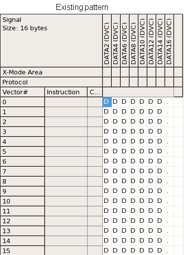
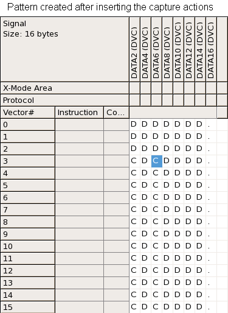

Inserting digital capture actions in an existing pattern with SmartRDI
You can insert some digital capture actions for some specific pins in an existing pattern to do the digital capture test.
Procedure
Results
The code to insert digital capture actions in an existing pattern is created.
Example
RDI_BEGIN();
rdi.digCap("mps").label("lpDcap_new").pin("DATA2,DATA6").addVecRange(3,15).samples(10).execute();
RDI_END();In
this example, the digital capture actions will be inserted in the vector range (3,15) of the
pattern lpDcap_new for the pin DATA2 and
DATA6. 10 samples are captured for each pin. The following two figures shows
the existing pattern and the pattern generated after inserting the digital capture
actions.


Functional changes
- Introduced in SmartRDI 2.1.0